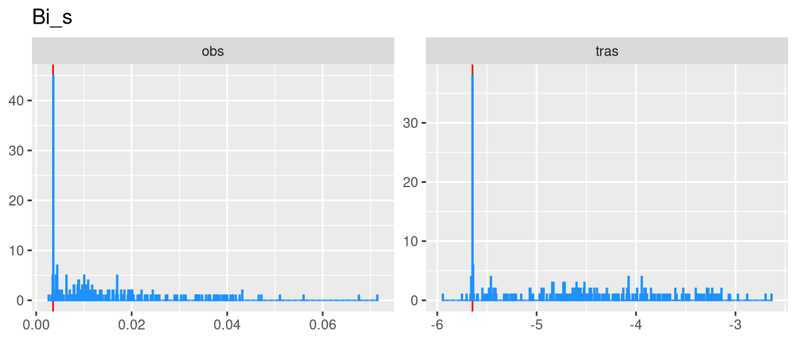
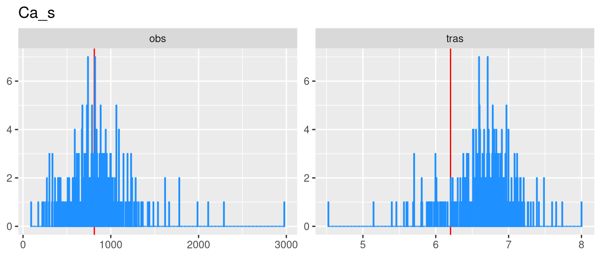
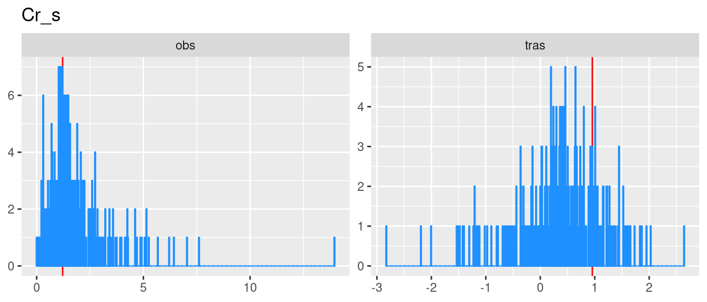
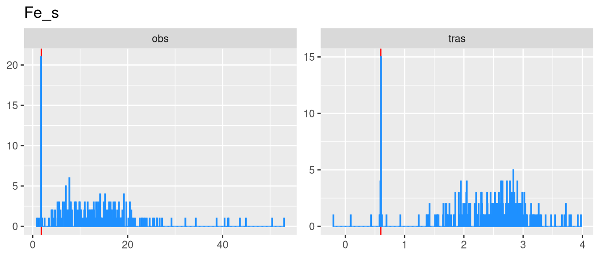
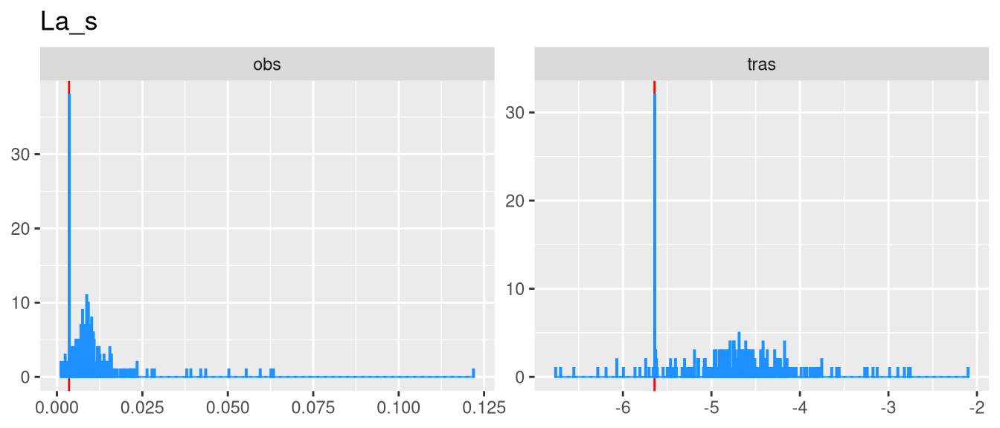
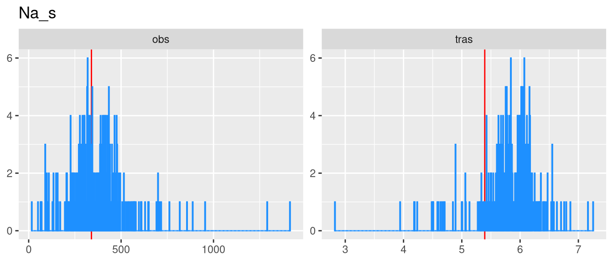
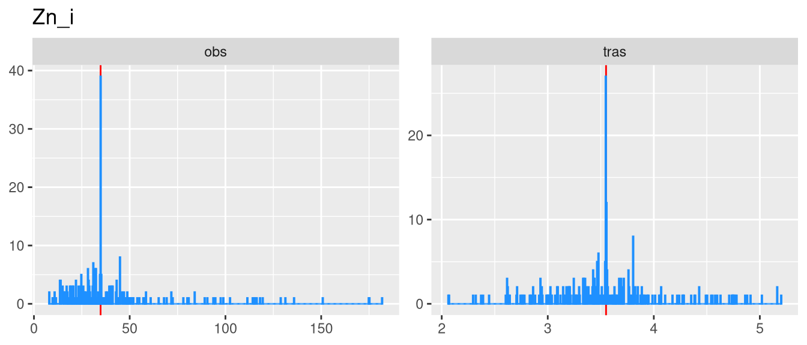
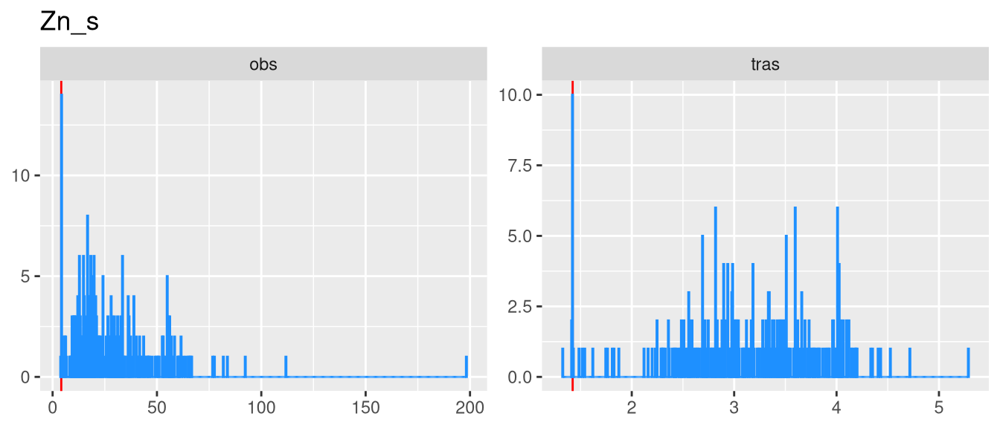
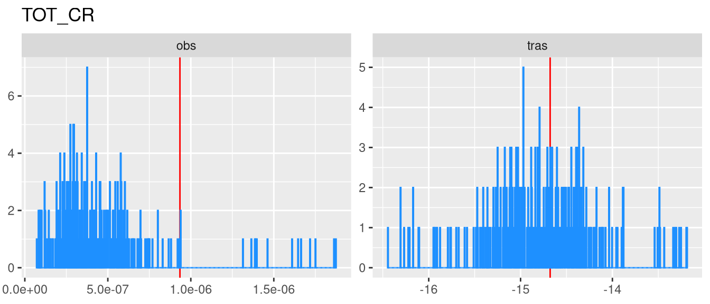

Terni
PM10
| n | mean | sd | median | trimmed | mad | min | max | range | skew | kurtosis | se |
|---|---|---|---|---|---|---|---|---|---|---|---|
| 276 | 32.88 | 15.2 | 29.32 | 30.93 | 13.65 | 10.36 | 96.01 | 85.64 | 1.134 | 0.931 | 0.9152 |
Moda: 18.98446
LOD: 5
Al_i
| n | mean | sd | median | trimmed | mad | min | max | range | skew | kurtosis | se |
|---|---|---|---|---|---|---|---|---|---|---|---|
| 276 | 203.2 | 122 | 170.7 | 183.7 | 74.75 | 35.06 | 1114 | 1079 | 3.028 | 14.87 | 7.346 |
Moda: 120.3277
LOD: 5.946

Al_s
| n | mean | sd | median | trimmed | mad | min | max | range | skew | kurtosis | se |
|---|---|---|---|---|---|---|---|---|---|---|---|
| 276 | 8.822 | 7.006 | 7.197 | 7.823 | 4.854 | 1.939 | 66.71 | 64.77 | 3.807 | 23.35 | 0.4217 |
Moda: 1.9387
LOD: 1.939

As_i
| n | mean | sd | median | trimmed | mad | min | max | range | skew | kurtosis | se |
|---|---|---|---|---|---|---|---|---|---|---|---|
| 276 | 0.6002 | 0.2502 | 0.466 | 0.5458 | 0 | 0.466 | 1.912 | 1.446 | 2.298 | 5.95 | 0.01506 |
Moda: 0.466
LOD: 0.466

As_s
| n | mean | sd | median | trimmed | mad | min | max | range | skew | kurtosis | se |
|---|---|---|---|---|---|---|---|---|---|---|---|
| 276 | 0.3379 | 0.2358 | 0.2831 | 0.3114 | 0.1816 | 0.03496 | 1.481 | 1.446 | 1.562 | 3.834 | 0.01419 |
Moda: 0.03536
LOD: 0.028

B_i
| n | mean | sd | median | trimmed | mad | min | max | range | skew | kurtosis | se |
|---|---|---|---|---|---|---|---|---|---|---|---|
| 276 | 3.249 | 3.724 | 2.171 | 2.585 | 1.972 | 0.5465 | 38.74 | 38.2 | 4.448 | 32.07 | 0.2242 |
Moda: 0.5465
LOD: 0.546

B_s
| n | mean | sd | median | trimmed | mad | min | max | range | skew | kurtosis | se |
|---|---|---|---|---|---|---|---|---|---|---|---|
| 276 | 4.734 | 2.989 | 3.998 | 4.427 | 3.292 | 1.264 | 16.25 | 14.99 | 0.8335 | 0.2955 | 0.1799 |
Moda: 1.2644
LOD: 1.264

Ba_i
| n | mean | sd | median | trimmed | mad | min | max | range | skew | kurtosis | se |
|---|---|---|---|---|---|---|---|---|---|---|---|
| 276 | 11.62 | 9.992 | 10.89 | 10.07 | 6.867 | 0.904 | 71.05 | 70.15 | 1.954 | 6.163 | 0.6014 |
Moda: 0.904
LOD: 0.904

Ba_s
| n | mean | sd | median | trimmed | mad | min | max | range | skew | kurtosis | se |
|---|---|---|---|---|---|---|---|---|---|---|---|
| 276 | 5.752 | 3.713 | 4.592 | 5.245 | 2.498 | 1.053 | 24.21 | 23.16 | 1.634 | 3.605 | 0.2235 |
Moda: 4.17807
LOD: 1.053

Bi_i
| n | mean | sd | median | trimmed | mad | min | max | range | skew | kurtosis | se |
|---|---|---|---|---|---|---|---|---|---|---|---|
| 276 | 0.2231 | 0.1847 | 0.1599 | 0.1939 | 0.1213 | 0.0132 | 1.043 | 1.03 | 1.601 | 2.645 | 0.01112 |
Moda: 0.0132
LOD: 0.013

Bi_s
| n | mean | sd | median | trimmed | mad | min | max | range | skew | kurtosis | se |
|---|---|---|---|---|---|---|---|---|---|---|---|
| 276 | 0.01512 | 0.01188 | 0.01018 | 0.01279 | 0.005906 | 0.0062 | 0.07145 | 0.06525 | 1.752 | 3.132 | 0.0007153 |
Moda: 0.0062
LOD: 0.006

Ca_i
| n | mean | sd | median | trimmed | mad | min | max | range | skew | kurtosis | se |
|---|---|---|---|---|---|---|---|---|---|---|---|
| 276 | 1079 | 691.9 | 960.4 | 987.4 | 647 | 95.82 | 4047 | 3951 | 1.375 | 2.213 | 41.65 |
Moda: 524.0175
LOD: 93.729
Ca_s
| n | mean | sd | median | trimmed | mad | min | max | range | skew | kurtosis | se |
|---|---|---|---|---|---|---|---|---|---|---|---|
| 276 | 835.5 | 351.4 | 814.6 | 811.6 | 289.5 | 92.18 | 2976 | 2884 | 1.474 | 5.77 | 21.15 |
Moda: 1293.162
LOD: 77.313

Cd_i
| n | mean | sd | median | trimmed | mad | min | max | range | skew | kurtosis | se |
|---|---|---|---|---|---|---|---|---|---|---|---|
| 276 | 0.05506 | 0.05236 | 0.04387 | 0.04669 | 0.04343 | 0.00411 | 0.3356 | 0.3315 | 2.055 | 6.265 | 0.003151 |
Moda: 0.00416
LOD: 0.003

Cd_s
| n | mean | sd | median | trimmed | mad | min | max | range | skew | kurtosis | se |
|---|---|---|---|---|---|---|---|---|---|---|---|
| 276 | 0.1267 | 0.1205 | 0.0702 | 0.1081 | 0.07206 | 0.0069 | 0.6731 | 0.6662 | 1.559 | 2.734 | 0.007253 |
Moda: 0.01681
LOD: 0.007

Ce_i
| n | mean | sd | median | trimmed | mad | min | max | range | skew | kurtosis | se |
|---|---|---|---|---|---|---|---|---|---|---|---|
| 276 | 0.2962 | 0.1436 | 0.2596 | 0.2774 | 0.06962 | 0.1034 | 1.097 | 0.9936 | 2.162 | 6.905 | 0.008644 |
Moda: 0.21299
LOD: 0.021

Ce_s
| n | mean | sd | median | trimmed | mad | min | max | range | skew | kurtosis | se |
|---|---|---|---|---|---|---|---|---|---|---|---|
| 276 | 0.02295 | 0.01926 | 0.0156 | 0.01871 | 0 | 0.0156 | 0.2262 | 0.2106 | 6.074 | 50.11 | 0.001159 |
Moda: 0.0156
LOD: 0.016

Co_i
| n | mean | sd | median | trimmed | mad | min | max | range | skew | kurtosis | se |
|---|---|---|---|---|---|---|---|---|---|---|---|
| 276 | 0.2879 | 0.3368 | 0.2141 | 0.2261 | 0.1338 | 0.02443 | 2.741 | 2.716 | 4.114 | 21.64 | 0.02027 |
Moda: 0.02474
LOD: 0.018

Co_s
| n | mean | sd | median | trimmed | mad | min | max | range | skew | kurtosis | se |
|---|---|---|---|---|---|---|---|---|---|---|---|
| 276 | 0.04046 | 0.0252 | 0.03664 | 0.03847 | 0.02427 | 0.005357 | 0.1662 | 0.1608 | 0.9577 | 1.805 | 0.001517 |
Moda: 0.0057
LOD: 0.004

Cr_i
| n | mean | sd | median | trimmed | mad | min | max | range | skew | kurtosis | se |
|---|---|---|---|---|---|---|---|---|---|---|---|
| 276 | 33.53 | 35.11 | 23.19 | 26.43 | 13.7 | 3.081 | 319.6 | 316.5 | 4.022 | 22.4 | 2.113 |
Moda: 37.15348
LOD: 1.912

Cr_s
| n | mean | sd | median | trimmed | mad | min | max | range | skew | kurtosis | se |
|---|---|---|---|---|---|---|---|---|---|---|---|
| 276 | 1.858 | 1.452 | 1.491 | 1.647 | 0.8776 | 0.0914 | 13.95 | 13.86 | 3.068 | 17.88 | 0.08738 |
Moda: 0.0914
LOD: 0.091

Cs_i
| n | mean | sd | median | trimmed | mad | min | max | range | skew | kurtosis | se |
|---|---|---|---|---|---|---|---|---|---|---|---|
| 276 | 0.03147 | 0.02405 | 0.02719 | 0.0285 | 0.01346 | 0.0013 | 0.1719 | 0.1706 | 1.547 | 4.352 | 0.001447 |
Moda: 0.0013
LOD: 0.001

Cs_s
| n | mean | sd | median | trimmed | mad | min | max | range | skew | kurtosis | se |
|---|---|---|---|---|---|---|---|---|---|---|---|
| 276 | 0.0434 | 0.03665 | 0.02743 | 0.03854 | 0.02506 | 0.0066 | 0.1835 | 0.1769 | 1.072 | 0.4332 | 0.002206 |
Moda: 0.0066
LOD: 0.007

Cu_i
| n | mean | sd | median | trimmed | mad | min | max | range | skew | kurtosis | se |
|---|---|---|---|---|---|---|---|---|---|---|---|
| 276 | 9.789 | 5.547 | 8.045 | 9.025 | 4.13 | 1.584 | 29.31 | 27.73 | 1.296 | 1.48 | 0.3339 |
Moda: 10.80438
LOD: 0.832

Cu_s
| n | mean | sd | median | trimmed | mad | min | max | range | skew | kurtosis | se |
|---|---|---|---|---|---|---|---|---|---|---|---|
| 276 | 2.955 | 1.922 | 2.483 | 2.67 | 1.49 | 0.2703 | 13.63 | 13.36 | 1.823 | 4.815 | 0.1157 |
Moda: 1.47003
LOD: 0.09

Fe_i
| n | mean | sd | median | trimmed | mad | min | max | range | skew | kurtosis | se |
|---|---|---|---|---|---|---|---|---|---|---|---|
| 276 | 510.9 | 348.8 | 443.9 | 463.7 | 215.6 | 44.11 | 3981 | 3937 | 4.664 | 37.66 | 21 |
Moda: 490.9474
LOD: 34.709

Fe_s
| n | mean | sd | median | trimmed | mad | min | max | range | skew | kurtosis | se |
|---|---|---|---|---|---|---|---|---|---|---|---|
| 276 | 12.91 | 8.373 | 12.23 | 12.08 | 7.048 | 0.8149 | 52.93 | 52.11 | 1.599 | 4.459 | 0.504 |
Moda: 1.82049
LOD: 0.3

Ga_i
| n | mean | sd | median | trimmed | mad | min | max | range | skew | kurtosis | se |
|---|---|---|---|---|---|---|---|---|---|---|---|
| 276 | 0.08069 | 0.04665 | 0.07754 | 0.07833 | 0.0348 | 0.0049 | 0.3111 | 0.3062 | 0.9925 | 3.033 | 0.002808 |
Moda: 0.0049
LOD: 0.005

Ga_s
| n | mean | sd | median | trimmed | mad | min | max | range | skew | kurtosis | se |
|---|---|---|---|---|---|---|---|---|---|---|---|
| 276 | 0.01026 | 0.007681 | 0.009339 | 0.009309 | 0.007384 | 0.0014 | 0.06454 | 0.06314 | 2.04 | 9.11 | 0.0004623 |
Moda: 0.00199
LOD: 0.001

K_i
| n | mean | sd | median | trimmed | mad | min | max | range | skew | kurtosis | se |
|---|---|---|---|---|---|---|---|---|---|---|---|
| 276 | 1027 | 989.4 | 722.5 | 859.6 | 891.1 | 91.79 | 4712 | 4620 | 1.366 | 1.476 | 59.55 |
Moda: 91.7929
LOD: 91.793

K_s
| n | mean | sd | median | trimmed | mad | min | max | range | skew | kurtosis | se |
|---|---|---|---|---|---|---|---|---|---|---|---|
| 276 | 362.2 | 314.3 | 189.1 | 311.3 | 139.5 | 70.38 | 1979 | 1909 | 1.502 | 2.649 | 18.92 |
Moda: 70.3797
LOD: 70.38

La_i
| n | mean | sd | median | trimmed | mad | min | max | range | skew | kurtosis | se |
|---|---|---|---|---|---|---|---|---|---|---|---|
| 276 | 0.161 | 0.08011 | 0.1528 | 0.1505 | 0.04164 | 0.05471 | 0.6574 | 0.6027 | 2.47 | 9.815 | 0.004822 |
Moda: 0.06099
LOD: 0.011
La_s
| n | mean | sd | median | trimmed | mad | min | max | range | skew | kurtosis | se |
|---|---|---|---|---|---|---|---|---|---|---|---|
| 276 | 0.01543 | 0.009596 | 0.0131 | 0.0133 | 0 | 0.0131 | 0.1218 | 0.1087 | 6.904 | 60.27 | 0.0005776 |
Moda: 0.0131
LOD: 0.013

Li_i
| n | mean | sd | median | trimmed | mad | min | max | range | skew | kurtosis | se |
|---|---|---|---|---|---|---|---|---|---|---|---|
| 276 | 0.1133 | 0.06011 | 0.1014 | 0.1056 | 0.04171 | 0.0208 | 0.4324 | 0.4116 | 1.745 | 4.848 | 0.003618 |
Moda: 0.0208
LOD: 0.021

Li_s
| n | mean | sd | median | trimmed | mad | min | max | range | skew | kurtosis | se |
|---|---|---|---|---|---|---|---|---|---|---|---|
| 276 | 0.1348 | 0.08788 | 0.1166 | 0.1254 | 0.07524 | 0.01428 | 0.9058 | 0.8915 | 2.879 | 20.12 | 0.00529 |
Moda: 0.14525
LOD: 0.012

Mg_i
| n | mean | sd | median | trimmed | mad | min | max | range | skew | kurtosis | se |
|---|---|---|---|---|---|---|---|---|---|---|---|
| 276 | 58.27 | 26.82 | 52.2 | 54.92 | 19.98 | 22.66 | 181.8 | 159.2 | 1.6 | 3.613 | 1.614 |
Moda: 22.66079
LOD: 14.136
Mg_s
| n | mean | sd | median | trimmed | mad | min | max | range | skew | kurtosis | se |
|---|---|---|---|---|---|---|---|---|---|---|---|
| 276 | 64.02 | 29.28 | 61.05 | 61.35 | 20.08 | 12.72 | 351.3 | 338.6 | 3.903 | 32.95 | 1.763 |
Moda: 52.30918
LOD: 4.046
Mn_i
| n | mean | sd | median | trimmed | mad | min | max | range | skew | kurtosis | se |
|---|---|---|---|---|---|---|---|---|---|---|---|
| 276 | 10.5 | 6.216 | 9.002 | 9.487 | 4.002 | 1.476 | 48.07 | 46.59 | 2.583 | 9.822 | 0.3741 |
Moda: 2.80347
LOD: 0.239

Mn_s
| n | mean | sd | median | trimmed | mad | min | max | range | skew | kurtosis | se |
|---|---|---|---|---|---|---|---|---|---|---|---|
| 276 | 7.145 | 4.344 | 6.404 | 6.707 | 3.836 | 0.7291 | 46.04 | 45.31 | 3.08 | 22.34 | 0.2615 |
Moda: 8.69263
LOD: 0.148
Mo_i
| n | mean | sd | median | trimmed | mad | min | max | range | skew | kurtosis | se |
|---|---|---|---|---|---|---|---|---|---|---|---|
| 276 | 4.143 | 3.981 | 2.833 | 3.472 | 2.71 | 0.2597 | 29.93 | 29.67 | 2.341 | 8.314 | 0.2397 |
Moda: 0.75262
LOD: 0.05

Mo_s
| n | mean | sd | median | trimmed | mad | min | max | range | skew | kurtosis | se |
|---|---|---|---|---|---|---|---|---|---|---|---|
| 276 | 8.032 | 10.79 | 4.887 | 5.704 | 2.964 | 0.935 | 95.65 | 94.72 | 4.293 | 23.16 | 0.6492 |
Moda: 0.935
LOD: 0.935

Na_i
| n | mean | sd | median | trimmed | mad | min | max | range | skew | kurtosis | se |
|---|---|---|---|---|---|---|---|---|---|---|---|
| 276 | 285.5 | 136.4 | 256.4 | 268 | 109.8 | 97.71 | 808 | 710.3 | 1.315 | 2.003 | 8.21 |
Moda: 135.7383
LOD: 97.71

Na_s
| n | mean | sd | median | trimmed | mad | min | max | range | skew | kurtosis | se |
|---|---|---|---|---|---|---|---|---|---|---|---|
| 276 | 371.8 | 167.2 | 353.6 | 360.1 | 117.8 | 16.84 | 1414 | 1397 | 1.823 | 8.372 | 10.06 |
Moda: 68.93498
LOD: 8.851

Nb_i
| n | mean | sd | median | trimmed | mad | min | max | range | skew | kurtosis | se |
|---|---|---|---|---|---|---|---|---|---|---|---|
| 276 | 0.1672 | 0.2516 | 0.1116 | 0.1203 | 0.07202 | 0.0024 | 2.821 | 2.819 | 5.845 | 48.75 | 0.01514 |
Moda: 0.0024
LOD: 0.002

Nb_s
| n | mean | sd | median | trimmed | mad | min | max | range | skew | kurtosis | se |
|---|---|---|---|---|---|---|---|---|---|---|---|
| 276 | 0.005211 | 0.007597 | 0.002606 | 0.003524 | 0.001685 | 0.0011 | 0.06748 | 0.06638 | 4.581 | 27.54 | 0.0004573 |
Moda: 0.0011
LOD: 0.001

Ni_i
| n | mean | sd | median | trimmed | mad | min | max | range | skew | kurtosis | se |
|---|---|---|---|---|---|---|---|---|---|---|---|
| 276 | 14.99 | 20.09 | 9.412 | 10.77 | 5.689 | 1.374 | 157.3 | 155.9 | 4.407 | 22.9 | 1.209 |
Moda: 6.323
LOD: 0.479

Ni_s
| n | mean | sd | median | trimmed | mad | min | max | range | skew | kurtosis | se |
|---|---|---|---|---|---|---|---|---|---|---|---|
| 276 | 1.189 | 1.06 | 0.9856 | 1.007 | 0.5496 | 0.1107 | 8.791 | 8.68 | 3.755 | 19.37 | 0.06379 |
Moda: 0.28608
LOD: 0.019

Pb_i
| n | mean | sd | median | trimmed | mad | min | max | range | skew | kurtosis | se |
|---|---|---|---|---|---|---|---|---|---|---|---|
| 276 | 5.29 | 3.345 | 4.415 | 4.819 | 2.415 | 0.436 | 30.44 | 30 | 2.711 | 13.21 | 0.2013 |
Moda: 9.11
LOD: 0.137

Pb_s
| n | mean | sd | median | trimmed | mad | min | max | range | skew | kurtosis | se |
|---|---|---|---|---|---|---|---|---|---|---|---|
| 276 | 0.8899 | 0.8397 | 0.6108 | 0.7395 | 0.5229 | 0.1758 | 6.307 | 6.132 | 2.654 | 11.03 | 0.05055 |
Moda: 0.1758
LOD: 0.176
Rb_i
| n | mean | sd | median | trimmed | mad | min | max | range | skew | kurtosis | se |
|---|---|---|---|---|---|---|---|---|---|---|---|
| 276 | 0.3321 | 0.1991 | 0.29 | 0.3036 | 0.1408 | 0.0979 | 1.279 | 1.182 | 1.758 | 4.226 | 0.01198 |
Moda: 0.0979
LOD: 0.098

Rb_s
| n | mean | sd | median | trimmed | mad | min | max | range | skew | kurtosis | se |
|---|---|---|---|---|---|---|---|---|---|---|---|
| 276 | 0.872 | 0.7378 | 0.553 | 0.7456 | 0.4303 | 0.1038 | 4.4 | 4.296 | 1.629 | 2.794 | 0.04441 |
Moda: 0.1038
LOD: 0.104

Sb_i
| n | mean | sd | median | trimmed | mad | min | max | range | skew | kurtosis | se |
|---|---|---|---|---|---|---|---|---|---|---|---|
| 276 | 0.8226 | 0.5482 | 0.6579 | 0.7547 | 0.4709 | 0.04213 | 3.605 | 3.562 | 1.307 | 2.269 | 0.033 |
Moda: 0.33791
LOD: 0.005

Sb_s
| n | mean | sd | median | trimmed | mad | min | max | range | skew | kurtosis | se |
|---|---|---|---|---|---|---|---|---|---|---|---|
| 276 | 0.4028 | 0.1857 | 0.3875 | 0.388 | 0.1682 | 0.03836 | 1.334 | 1.296 | 1.237 | 3.3 | 0.01118 |
Moda: 0.32155
LOD: 0.008

Sn_i
| n | mean | sd | median | trimmed | mad | min | max | range | skew | kurtosis | se |
|---|---|---|---|---|---|---|---|---|---|---|---|
| 276 | 3.776 | 3.022 | 2.716 | 3.335 | 2.264 | 0.2975 | 13.78 | 13.49 | 1.17 | 0.6159 | 0.1819 |
Moda: 3.90441
LOD: 0.052

Sn_s
| n | mean | sd | median | trimmed | mad | min | max | range | skew | kurtosis | se |
|---|---|---|---|---|---|---|---|---|---|---|---|
| 276 | 0.1788 | 0.1171 | 0.1555 | 0.1629 | 0.08798 | 0.02253 | 0.8175 | 0.7949 | 2.04 | 6.637 | 0.007047 |
Moda: 0.32514
LOD: 0.007

Sr_i
| n | mean | sd | median | trimmed | mad | min | max | range | skew | kurtosis | se |
|---|---|---|---|---|---|---|---|---|---|---|---|
| 276 | 1.788 | 1.002 | 1.593 | 1.676 | 0.8676 | 0.5197 | 5.604 | 5.084 | 1.079 | 1.213 | 0.06033 |
Moda: 0.60836
LOD: 0.52

Sr_s
| n | mean | sd | median | trimmed | mad | min | max | range | skew | kurtosis | se |
|---|---|---|---|---|---|---|---|---|---|---|---|
| 276 | 2.19 | 1.278 | 1.935 | 1.987 | 0.7392 | 0.414 | 10.53 | 10.12 | 2.299 | 8.168 | 0.07692 |
Moda: 5.30181
LOD: 0.196

Ti_i
| n | mean | sd | median | trimmed | mad | min | max | range | skew | kurtosis | se |
|---|---|---|---|---|---|---|---|---|---|---|---|
| 276 | 5.481 | 3.198 | 4.787 | 4.951 | 2.006 | 0.8796 | 23.15 | 22.27 | 2.133 | 6.155 | 0.1925 |
Moda: 5.26099
LOD: 0.195

Ti_s
| n | mean | sd | median | trimmed | mad | min | max | range | skew | kurtosis | se |
|---|---|---|---|---|---|---|---|---|---|---|---|
| 276 | 0.1332 | 0.1137 | 0.09533 | 0.112 | 0.01695 | 0.0839 | 1.527 | 1.443 | 7.571 | 81.94 | 0.006845 |
Moda: 0.0839
LOD: 0.084

Tl_i
| n | mean | sd | median | trimmed | mad | min | max | range | skew | kurtosis | se |
|---|---|---|---|---|---|---|---|---|---|---|---|
| 276 | 0.03391 | 0.02578 | 0.03203 | 0.03186 | 0.02639 | 0.0011 | 0.1871 | 0.186 | 1.147 | 3.794 | 0.001552 |
Moda: 0.0011
LOD: 0.001

Tl_s
| n | mean | sd | median | trimmed | mad | min | max | range | skew | kurtosis | se |
|---|---|---|---|---|---|---|---|---|---|---|---|
| 276 | 0.09277 | 0.0808 | 0.0611 | 0.08317 | 0.06424 | 0.001584 | 0.497 | 0.4954 | 1.218 | 2.138 | 0.004864 |
Moda: 0.13238
LOD: 0

U_i
| n | mean | sd | median | trimmed | mad | min | max | range | skew | kurtosis | se |
|---|---|---|---|---|---|---|---|---|---|---|---|
| 276 | 0.008185 | 0.005089 | 0.008221 | 0.007756 | 0.005207 | 0.0017 | 0.03017 | 0.02847 | 0.7465 | 1.018 | 0.0003063 |
Moda: 0.0017
LOD: 0.002

U_s
| n | mean | sd | median | trimmed | mad | min | max | range | skew | kurtosis | se |
|---|---|---|---|---|---|---|---|---|---|---|---|
| 276 | 0.001725 | 0.0008016 | 0.00182 | 0.001668 | 0.0007104 | 4e-04 | 0.005485 | 0.005085 | 0.9713 | 2.308 | 4.825e-05 |
Moda: 0.00182
LOD: 0

V_i
| n | mean | sd | median | trimmed | mad | min | max | range | skew | kurtosis | se |
|---|---|---|---|---|---|---|---|---|---|---|---|
| 276 | 0.4988 | 0.3431 | 0.4624 | 0.4573 | 0.2731 | 0.0908 | 2.078 | 1.987 | 1.473 | 3.688 | 0.02065 |
Moda: 0.0908
LOD: 0.091

V_s
| n | mean | sd | median | trimmed | mad | min | max | range | skew | kurtosis | se |
|---|---|---|---|---|---|---|---|---|---|---|---|
| 276 | 0.6099 | 0.4845 | 0.4386 | 0.5283 | 0.3425 | 0.0297 | 3.301 | 3.271 | 1.747 | 4.038 | 0.02916 |
Moda: 0.0297
LOD: 0.03

W_i
| n | mean | sd | median | trimmed | mad | min | max | range | skew | kurtosis | se |
|---|---|---|---|---|---|---|---|---|---|---|---|
| 276 | 0.09307 | 0.07541 | 0.07344 | 0.07862 | 0.05513 | 0.0278 | 0.4635 | 0.4357 | 2.299 | 6.606 | 0.004539 |
Moda: 0.0278
LOD: 0.028

W_s
| n | mean | sd | median | trimmed | mad | min | max | range | skew | kurtosis | se |
|---|---|---|---|---|---|---|---|---|---|---|---|
| 276 | 0.0866 | 0.09894 | 0.06261 | 0.06713 | 0.03921 | 0.00315 | 0.6935 | 0.6903 | 3.843 | 17.01 | 0.005955 |
Moda: 0.05153
LOD: 0.003
Zn_i
| n | mean | sd | median | trimmed | mad | min | max | range | skew | kurtosis | se |
|---|---|---|---|---|---|---|---|---|---|---|---|
| 276 | 40.47 | 27.82 | 34.8 | 34.91 | 12.53 | 11.46 | 181.7 | 170.2 | 2.559 | 7.55 | 1.675 |
Moda: 34.80341
LOD: 11.462

Zn_s
| n | mean | sd | median | trimmed | mad | min | max | range | skew | kurtosis | se |
|---|---|---|---|---|---|---|---|---|---|---|---|
| 276 | 28.82 | 21.08 | 23.11 | 26.49 | 15.23 | 4.079 | 198.1 | 194.1 | 2.556 | 14.55 | 1.269 |
Moda: 4.14876
LOD: 4.079

Zr_i
| n | mean | sd | median | trimmed | mad | min | max | range | skew | kurtosis | se |
|---|---|---|---|---|---|---|---|---|---|---|---|
| 276 | 0.6463 | 0.3221 | 0.5795 | 0.6187 | 0.2835 | 0.08956 | 1.659 | 1.57 | 0.8204 | 0.3756 | 0.01939 |
Moda: 0.2224
LOD: 0.034

Zr_s
| n | mean | sd | median | trimmed | mad | min | max | range | skew | kurtosis | se |
|---|---|---|---|---|---|---|---|---|---|---|---|
| 276 | 0.02467 | 0.03082 | 0.0173 | 0.0196 | 0.01462 | 0.002131 | 0.3248 | 0.3227 | 5.552 | 43.76 | 0.001855 |
Moda: 0.00318
LOD: 0.001

TOT_CR
| n | mean | sd | median | trimmed | mad | min | max | range | skew | kurtosis | se |
|---|---|---|---|---|---|---|---|---|---|---|---|
| 276 | 4.506e-07 | 3.114e-07 | 3.742e-07 | 3.991e-07 | 1.894e-07 | 7.221e-08 | 1.874e-06 | 1.802e-06 | 2.351 | 6.689 | 1.874e-08 |
Moda: 0
LOD:

TOT_NCR
| n | mean | sd | median | trimmed | mad | min | max | range | skew | kurtosis | se |
|---|---|---|---|---|---|---|---|---|---|---|---|
| 276 | 0.7105 | 0.4617 | 0.5756 | 0.6281 | 0.2875 | 0.1088 | 2.773 | 2.664 | 2.301 | 6.111 | 0.02779 |
Moda: 0.25393
LOD: